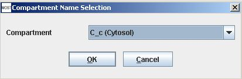
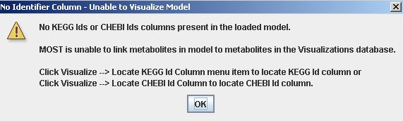
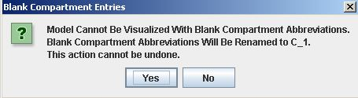
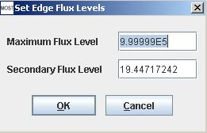

Metabolic Optimization and Simulation Tool
|
Help Topics
|
Visualization Menu The MOST Visualization Menu is used to visualize models, locate identifier columns for visualization, and set levels for edge thicknesses in visualizations. MOST uses KEGG ids or CHEBI ids to identify metabolites. Identifier columns are automatically located if the columns names contain "KEGG", "Kegg", "CHEBI", or "Chebi", or "EC", "E.C.". EC Numbers or KEGG reaction ids can be used to assist in identifying reactions but are not required. MOST visualizes models by compartment. If any compartment entries are blank, the compartments will need to be renamed to a default name. Models in the Model Collection that contain KEGG ids and can be visualized are indicated by a "Yes" entry in the Identifiers column. Select Visualization –> Visualize Compartment (Alt+V then Alt+V). If MOST can locate identifiers in the metabolites table and there are no blank compartments, the Compartment Name Selection dialog will appear.  If no identifiers are found, the No Identifier Column warning will appear.  If any compartments are blank, the warning will appear.  Blank compartments will be renamed to "C_1" or a default name if the "Yes" button is clicked before visualization. Clicking the "No" button will cancel the renaming of blank compartments and visualization of the model. Identifier columns can be located manually if the loaded model contains identifiers, but the columns were not automatically located by MOST because the column names are not contained in the list of commonly used names. The following menu items exist in the Visualize menu to locate identifier columns: "Locate KEGG Metabolite Id Column", "Locate CHEBI Id Column", "Locate EC Number Column", and "Locate KEGG Reaction Id Column". If "Scale Edge Thickness Using Flux Values" is selected in Visualization Options, the default settings for scaling edge thicknesses is to use the maximum upper bound in a model as the Maximum Flux Level. Any reaction with a flux within 95% of the level is considered infinite and is drawn using the maximum edge thickness. The maximum non-infinite flux in the model is used to set the Secondary Flux Level. These levels can be set by usnig the Set Edge Flux Levels menu item. Select Visualization –> Set Edge Flux Levels (Alt+V then Alt+F). The Set Edge Flux Levels dialog will appear. This option is useful when comparing fluxes in different visualizations. (Edge thicknesses are calculated using the absolute value of fluxes.)  Reset Edge Flux Levels to Default: The default setting can be restored by clicking Visualization –> Reset Edge Flux Levels to Default (Alt+V then Alt+D). |